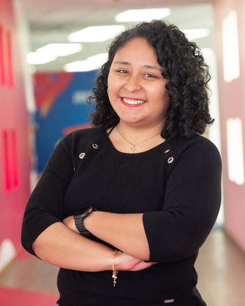

Velocidad
Qué tan rápido llega el valor al negocio y la información a quien decide.
Time to MarketTime to InsightLead time de cambiosFrecuencia de despliegue
Líder de Data & Analytics. Estrategia tecnológica y transformación digital.

Más de 13 años en datos y tecnología, 8 de ellos en el BCP, donde pasé de operar las plataformas analíticas del banco a definir la estrategia de datos de la CIO.
Combino visión de producto, gobierno de datos y liderazgo de equipos del banco y proveedores (más de 15 personas), con resultados medibles en estabilidad, eficiencia, automatización y calidad de servicio. Curso la Maestría en Gerencia de TI y Transformación Digital y me formé en IA agéntica en MIT Professional Education.
Mi motor: convertir datos en decisiones, tecnología en impacto y equipos en agentes de cambio.
Gestiono con evidencia. Estas son las categorías e indicadores que sigo de cerca en los productos y equipos que lidero, con métricas DORA como referencia.
Qué tan rápido llega el valor al negocio y la información a quien decide.
Qué tan confiables son las plataformas y los procesos críticos.
Cuánto tiempo de los equipos se libera para crear valor.
Cómo se usan los recursos y cómo vive el usuario el servicio.
Cómo evolucionan los procesos y cómo los vive quien los usa.
Responsable de la estrategia y el producto de datos con el que la CIO mide y gestiona su desempeño de ingeniería.
Analista Senior BI en Stefanini Perú, Analista DataStage en Experis Perú, Consultor BI en GORA y practicante en tgestiona. Proyectos de integración de datos, ETL y Data Warehouse para banca, incluida la migración de un Data Warehouse de Oracle a Teradata.
Llevo la IA y los datos de la promesa al resultado, y me gusta compartirlo en conferencias, aulas y comunidades.
Outcome vs. output, baseline, atribución y gobierno para escalar.
Además co-produje el evento, que impulsa la comunidad interna de ingeniería y la adopción de prácticas.
Dicté los módulos de operaciones, DataOps y MLOps. Ver en Instagram ↗
Clase abierta sobre cómo la IA cambia el trabajo del arquitecto de datos frente a los datos no estructurados. Ver el video ↗
Acompañé a un equipo en una solución con IA de impacto social.
Claude Code, Microsoft 365 Copilot y prompt engineering.
Digital Management, Transformación Digital, Gestión Empresarial, Innovación y Agilidad.
Formación ejecutiva en cómo la IA agéntica transforma la estrategia y la operación de las empresas.
Idiomas: español nativo, inglés intermedio.
Abierta a conversar sobre estrategia de datos, productos de datos e IA aplicada al negocio.